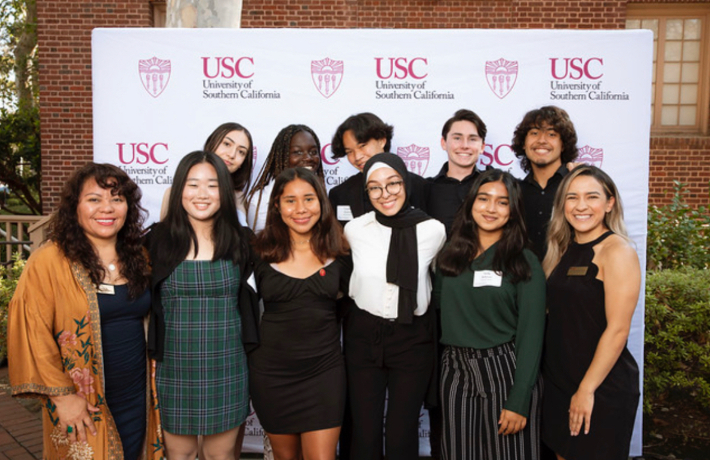
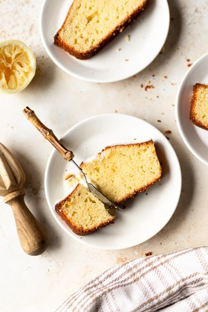
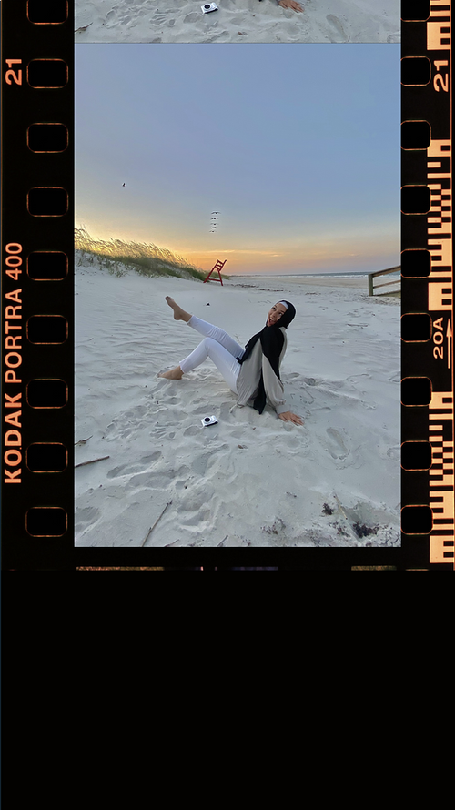
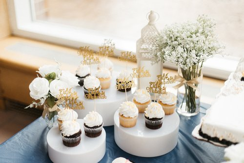
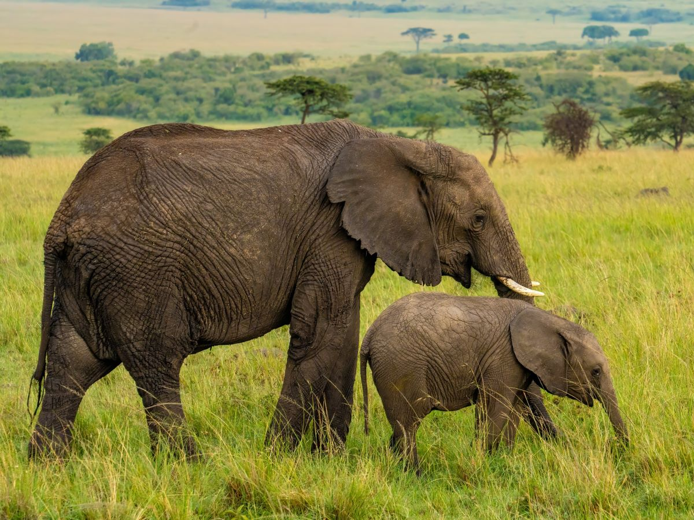
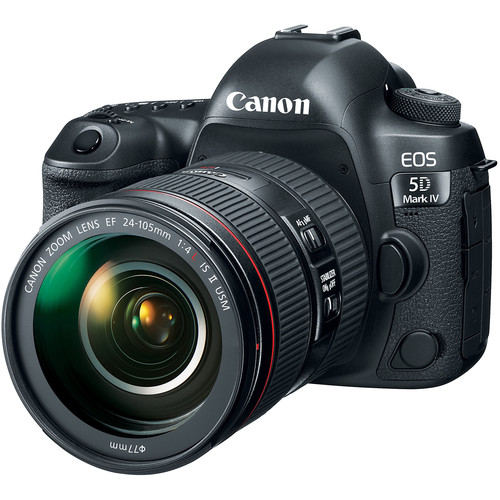

Marketing. Brand Strategy. User Experience.🚀
I'm redefining what it looks like to tell stories in our digital world. And I'm really damn good at it.

My Story
👋 Hi, I'm Douae—a sophomore at Cornell University studying Information Science and Communication. Why? Because I'm endlessly curious about how technology shapes human behavior, and how we can unlock the holy grail of storytelling that actually sticks.
💡 I'm all about finding the sweet spot where brand strategy, communication technologies, and human interaction come together. Whether it's geeking out over marketing trends, analyzing fascinating data patterns, or designing unforgettable user experiences, I'm on a mission to craft digital experiences that are as functional as they are fun to use.
🌱 But here's the thing: none of this works without people. Community is everything to me. Whether I'm collaborating with a team, making products more accessible, or amplifying someone else's voice, I'm driven by the idea that every brand, every design, every campaign should create meaningful connections. Because at the end of the day, that's what it's all about: building raw, authentic, and deeply human connections in an increasingly tech-driven world.
🫧 When I'm not dreaming up creative strategies, you can find me hiking scenic trails, learning from locals in other countries, or losing track of time reading psych thrillers with my cat purring in my lap. Oh, and I have a thing for photography too 👀
Here's a snapshot into my world from my iPhone ✧･ﾟ: *






Bucket List
- Sleep in an Igloo Hotel: Experience the magic of the Arctic in a unique way.
- Give a TED Talk: Share my insights and experiences on a global stage.
- Perform Hajj in Mecca: Embarking on this spiritual journey is a top priority for me.
- Cruise to Antarctica: To explore the pristine beauty of the earth's southernmost continent.
- Visit Every State in the US: Embracing the diverse cultures and landscapes across the nation.
- Ride a Hot Air Balloon: Floating above scenic landscapes and capturing breathtaking views.
- Learn Spanish, Arabic, and French: To deepen my understanding and appreciation of different cultures.

Things That Make Me Happy
-
Walking in Nature:
There's nothing like fresh air and greenery. Oh and sinking your toes into soft sand as you walk along the beach.
-
My Cat:
My sassy orange British shorthair. My favorite napping partner.
-
Morocco:
My beautiful country. My cultural inspiration.
-
Prayer and Meditation:
Reconnecting with my spiritual side brings peace.
What's in My Camera Bag
Camera Body
- Canon 5D Mark IV
Lenses
- 85mm lens 1.4
- 50mm lens 1.8
- 17-40mm lens 4.0
Accessories
- Godox V83ii Flash
- Macbook M4
- LaCie Hardrive
